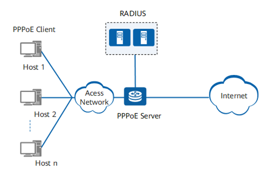
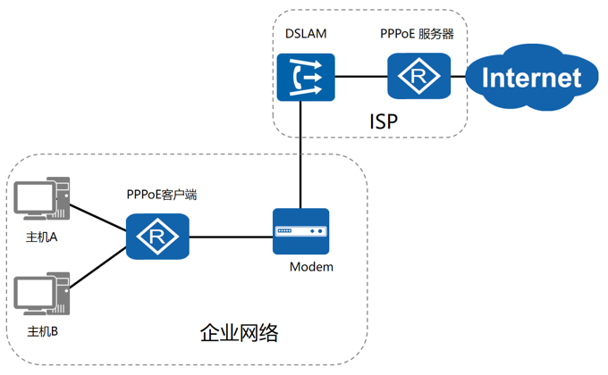
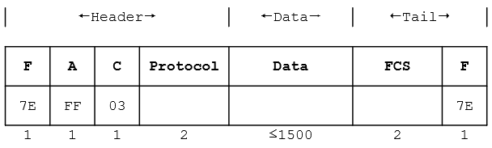
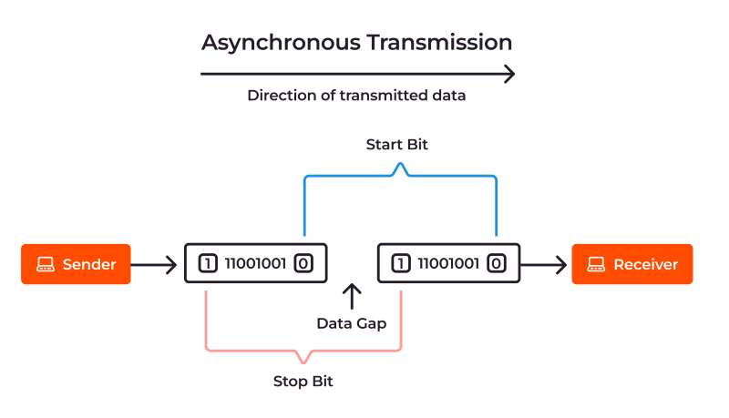
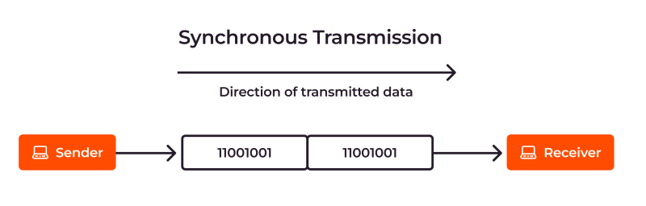

点对点协议
@PPP- 数据链路层的通信协议
- 可用于同步或异步链路
- 应用 Application
- 用户经 ISP（Internet Service Provider）接入互联网
PPP
PPPoE - PPP over Ethernet
- 广域网WAN之间的专有链路
- VPN之间的通信链路
- 协议特点 Feature
- 简单
发的帧经过CRC校验正确，则接受；反之丢弃
不需要纠错：由传输层实现
不需要流量控制：由传输层实现
不需要帧序号
仅支持点对点链路，不支持点到多点链路
仅支持全双工链路，不支持单工和半双工链路
- 封装成帧
便于从比特流中找到帧的开发和结束
- 透明
发什么传什么
即使发帧界定符，也可以正常接收
- 差错检测
尽早消除错误；避免后续继续传播，占用网络资源
检错==纠错？
- 其它
多种网络协议
多种类型链路
检测连接状态
最大传输单元 MTU - 数据部分
网络地址协商
数据压缩协商
多应用于广域网 WAN
- 协议组成 Components
- 封帧
- 链路控制协议 LCP
LCP-link control protocol
链路的建立配置和测试
- 网络控制协议 NCP
network control protocol
- 帧格式 Format
- F字段：
7E；0111 1110
标记一个PPP帧的开始和结束
PPP帧界定符
- A字段：
FF；11111111
没有指定；不携带信息
- C字段：
03；0000 0011
没有指定；不携带信息
- 协议字段：数据部分向上交付给哪个协议处理
0x0021 IP数据报
0xC021 链路控制协议
0x8021 网络层控制数据
- FCS：
Frame Check Sequence
帧校验序列
包括：地址字段、控制字段、协议字段以及信息/数据字段
- 字节填充 Padding
- 使用转义符号 0x7D（0111 1101）进行字节填充，以保障透明传输
- 适用于面向字节 异步 传输链路
- 通过开始和结束比特保证传输
- 半双工通信模式
- 情况1：出现帧定界符 0x7E，将其转变为2个字节：0x7D 和 0x5E
- 情况2：出现转义字符 0x7D，将其转变为2个字节：0x7D 和 0x5D
- 情况3：其它 ASCII控制字符（<0x20），在其前面加上 0x7D，同时调整该字符的编码
- 0bit填充 Padding
- 使用0比特进行填充，以保障透明传输
- 适用于面向比特的 同步 传输链路
- 需要时钟信号保持同步
- 传输不间断
- 全双工通信模式
- 发端：每发现连续5个1，就填充1个0
- 收端：每发现连续5个1，就删除其后面的0
- 发送端：每个5个1，插入1个0
- 接收端：删除每5个1后的0





| 0x7E | → | 0x7D | 0x5E |
| 0x7D | → | 0x7D | 0x5D |
| 0x03 | → | 0x7D | 0x23 |

| 1 | 0 | 1 | 1 | 1 | 1 | 1 | 1 | 0 | 0 | 1 | ||
| Padding | 1 | 0 | 1 | 1 | 1 | 1 | 1 | 0 | 1 | 0 | 0 | 1 |
还原填充字节
7D 5E → 7E
7D 5D → 7D
7D 5D → 7D
7D 5E → 7E
最后数据：7E FE 27 7D 7D 7E
| 0 | 1 | 1 | 0 | 1 | 1 | 1 | 1 | 1 | 1 | 1 | 1 | 1 | 1 | 0 | 0 | |||
| Padding | 0 | 1 | 1 | 0 | 1 | 1 | 1 | 1 | 1 | 0 | 1 | 1 | 1 | 1 | 1 | 0 | 0 | 0 |
| Padding | 0 | 0 | 0 | 1 | 1 | 1 | 0 | 1 | 1 | 1 | 1 | 1 | 0 | 1 | 1 | 1 | 1 | 1 | 0 | 1 | 1 | 0 |
| 0 | 0 | 0 | 1 | 1 | 1 | 0 | 1 | 1 | 1 | 1 | 1 | 1 | 1 | 1 | 1 | 1 | 1 | 1 | 0 |
状态 State
- 基本过程 Procedure
- 以用户拨号上网为例
- 用户拨号
建立物理链接
- 建立阶段
LCP
- 链路配置阶段
LCP
- 鉴权阶段
LCP
- 网络配置阶段
NCP
分配用户IP
- 通信阶段
- 释放网络层
NCP
回收分配的IP地址
- 释放链路层
LCP
- 释放物理层
- 状态 State
- 中间的任何一个状态失败都返回静止状态
链路静止 Link Dead
↓
用户拨号
↓
链路建立 Link Establish
↓
LCP协商成功
↓
鉴权 Authenticate
↓
认证成功
↓
网络层协议 NCP
↓
NCP协商成功
↓
链路打开 Link Open
↓
数据传输
↓
链路终止 Link Terminate
↓
链路静止 Link Dead
Protocol Reading
- Overview
- The Point-to-Point Protocol is designed for simple links which transport packets between two peers. These links provide full-duplex simultaneous bi-directional operation, and are assumed to deliver packets in order. It is intended that PPP provide a common solution for easy connection of a wide variety of hosts, bridges and routers.
- Encapsulation
- The PPP encapsulation provides for multiplexing of different network-layer protocols simultaneously over the same link. The PPP encapsulation has been carefully designed to retain compatibility with most commonly used supporting hardware.
- Only 8 additional octets are necessary to form the encapsulation when used within the default HDLC-like framing. In environments where bandwidth is at a premium, the encapsulation and framing may be shortened to 2 or 4 octets.
- To support high speed implementations, the default encapsulation uses only simple fields, only one of which needs to be examined for demultiplexing. The default header and information fields fall on 32-bit boundaries, and the trailer may be padded to an arbitrary boundary.
- LCP-link control protocol
- The LCP is used to automatically agree upon the encapsulation format options, handle varying limits on sizes of packets, detect a looped-back link and other common misconfiguration errors, and terminate the link. Other optional facilities provided are authentication of the identity of its peer on the link, and determination when a link is functioning properly and when it is failing.
- NCP-network control protocol
- Point-to-Point links tend to exacerbate many problems with the current family of network protocols. For instance, assignment and management of IP addresses , which is a problem even in LAN environments, is especially difficult over circuit-switched point-to-point links (such as dial-up modem servers). These problems are handled by a family of Network Control Protocols (NCPs), which each manage the specific needs required by their respective network-layer protocols. These NCPs are defined in companion documents.
- Protocol field
- The Protocol field is one or two octets, and its value identifies the datagram encapsulated in the Information field of the packet. All Protocols MUST be odd; Also, all Protocols MUST be assigned such that the least significant bit (LSB) of the most significant octet equals "0". Frames received which don't comply with these rules MUST be treated as having an unrecognized Protocol.
- values in the "0***" to "3***" range identify the network-layer protocol of specific packets
- values in the "8***" to "b***" range identify packets belonging to the associated Network Control Protocols (NCPs), if any.
- values in the "4***" to "7***" range are used for protocols with low volume traffic which have no associated NCP.
- values in the "c***" to "f***" range identify packets as link-layer Control Protocols (such as LCP).
- Information Field
- The Information field is zero or more octets. The Information field contains the datagram for the protocol specified in the Protocol field.
- The maximum length for the Information field, including Padding, but not including the Protocol field, is termed the Maximum Receive Unit (MRU), which defaults to 1500 octets. By negotiation, consenting PPP implementations may use other values for the MRU.
- Padding
- On transmission, the Information field MAY be padded with an arbitrary number of octets up to the MRU. It is the responsibility of each protocol to distinguish padding octets from real information.
Summary & Homework
- Summary
- PPP的特点
- 透明传输的措施和特点
- PPP协议的状态
- Homework
- PPP帧实现透明传输的措施有（）和（）。
- Reading
- Point-to-Point Protocol (PPP) Frame Format
- Point-to-Point Protocol (PPP)
- RFC 1661
- Transmission Modes in Data Transmission
- What is data transmission | Everything you need to know about it
- Asynchronous Transmission
- Synchronous Transmission
- Serial Transmission
- Point To Point Network
- PPP Full Form
- 深入浅出计算机网络 - 3.3 点对点协议PPP
- PPP & PPPoE & L2TP & PPTP 一文全介绍